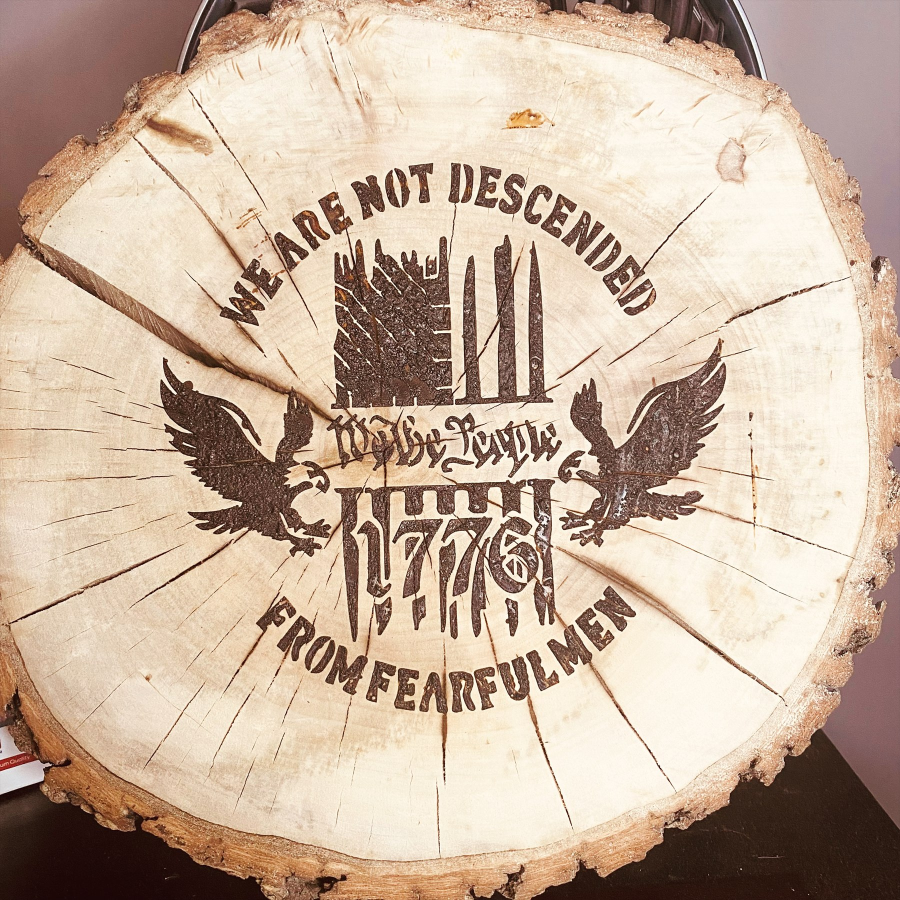
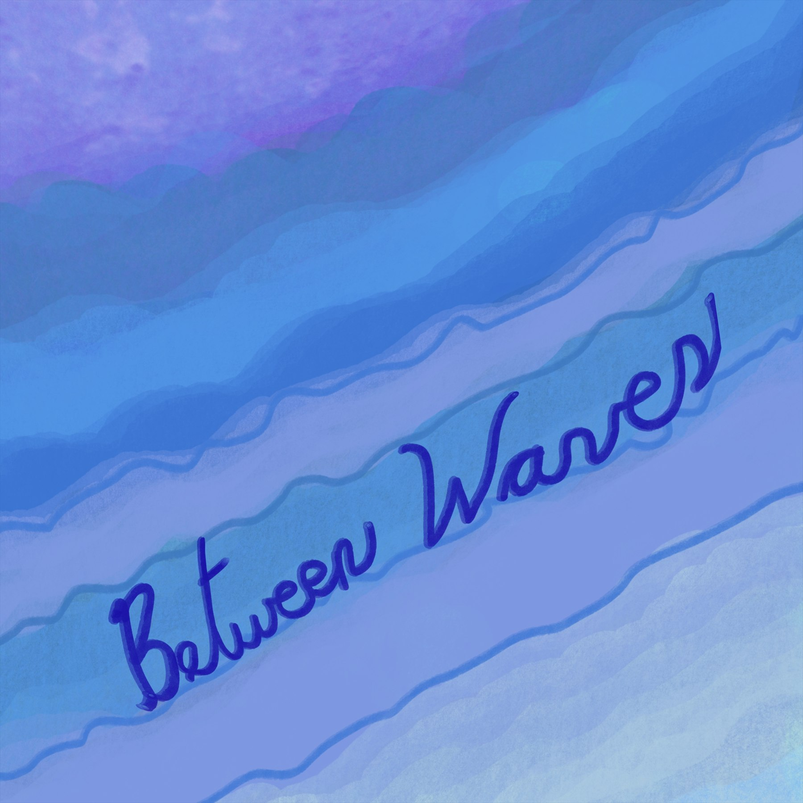

Robert Marleton / Inkspirations Studios
Photography
A dedicated home for photographic studies, studio details, objects, surfaces, and the visual moments that deserve their own room.
Selected Images
Photography gets its own wall.
No detour into the artwork gallery. This page is specifically for photographic and studio image work, with the images visible immediately.





Separate from the artwork. Still part of the same creative world.
Photography now has a direct destination of its own, while the artwork gallery remains available separately.